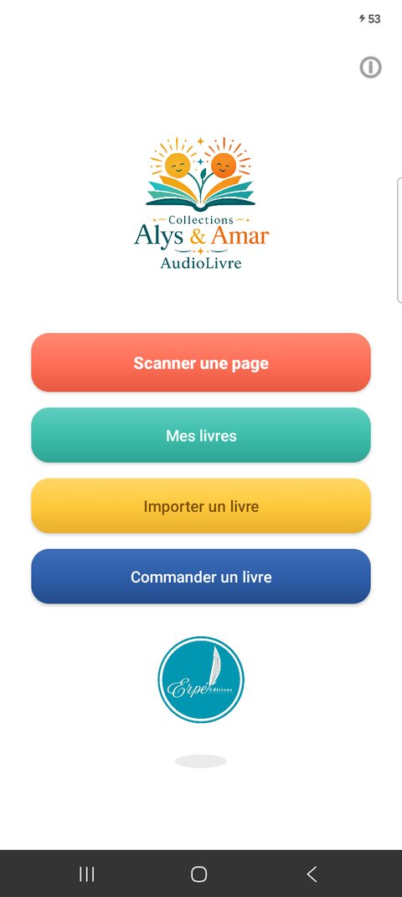

Alys & Amar AudioLivre transforme la lecture en une expérience à écouter autant qu'à regarder. Chaque page d'un livre Alys & Amar imprimé porte un petit code QR : il suffit de la scanner pour déclencher, instantanément, la narration audio correspondante.
100% hors ligne, aucune donnée collectée
Écoutez un extrait
Un aperçu de la narration, tirée du premier livre de la collection.
Dessalines, le père de notre liberté — page 2
Comment ça marche
Scannez la page du livre physique avec l'appareil photo.
L'histoire se lit à voix haute, page après page.
Aucune connexion internet requise, une fois le livre débloqué.
Retrouvez tous vos livres débloqués dans votre bibliothèque personnelle.
Pour qui ?
Pensée pour les familles et les jeunes lecteurs, l'application accompagne la lecture des livres de la collection Alys & Amar : des histoires ancrées dans la culture et l'histoire haïtiennes, à lire et à écouter en français comme en créole haïtien.
Catalogue actuel

Dessalines, le père de notre liberté
Erpé Éditions Jeunesse
Le récit de la vie de Dessalines et de la libération d'un peuple, raconté pour le jeune public.

Les deux petits soleils
Ismaélite Zidor — Erpé Éditions Jeunesse
Une histoire pleine de lumière, à lire et à écouter en famille.

Le trésor de la Citadelle
Ismaélite Zidor — Erpé Éditions Jeunesse
Une aventure au cœur de la Citadelle, entre histoire et imaginaire.
Se procurer un livre
Vous ne possédez pas encore un de ces livres ? Contactez-nous directement pour le commander.
En savoir plus
L'application
Bientôt disponible sur Google Play.
Ismaélite Zidor
Enseignante, entrepreneure engagée, autrice du roman Ombre Lumineuse paru chez Erpé Éditions. Présidente fondatrice de la Fondation ANAP1910, elle incarne un leadership profondément humain, où chaque action est un acte de foi et de grandeur.
Erpé Éditions
Maison d'auto-édition engagée qui mobilise l'économie sociale et solidaire pour accompagner et publier des auteurs de tous horizons et de tous genres littéraires : essai, roman…
FAQ
Faut-il une connexion internet ?
Non, seulement pour le premier déblocage d'un livre via son code QR. Ensuite, la lecture audio fonctionne entièrement hors ligne, où que vous soyez.
Sur quels téléphones l'application fonctionne-t-elle ?
Sur tout appareil Android à partir de la version 7.0. Une caméra fonctionnelle est nécessaire pour scanner les codes QR des livres.
L'application a-t-elle des achats intégrés ?
Non. Chaque histoire se débloque simplement en scannant la page imprimée du livre physique correspondant — aucun paiement dans l'application.
Combien coûtent les livres ?
Le tarif dépend du point de vente choisi. Consultez la page Achat sur Amazon ou contactez-nous directement par WhatsApp pour les prix actuels.
Mes données personnelles sont-elles collectées ?
Non, jamais. Consultez notre politique de confidentialité pour le détail.